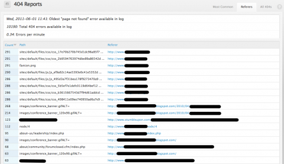

Posts from June 2011
New Module: Page Not Found Reports
tl;dr: Page Not Found Reports module released.
A couple weeks ago, I launched a client site that was dealing with a lot of 404 errors. This put unnecessary load on the server: Boost will serve up cached versions of most pages, but for paths that haven't been cached yet, Drupal needs to process it and determine if there's a page available to serve up. In this case, the client overlooked a couple directories of images and other static files that should have been migrated from their old site, so they were getting a lot of 404s from off-site uses of those images. Some were other sites that were hot-linking to the client's images (impolite, but not verboten), but others were being used in their own mailing lists and other sites that they maintained.
To make it easier to identify what files and pages may have missed out on the migration, I built Page Not Found Reports. This adds three new reports:
- Most Common: Similar to Drupal's Top 'page not found' errors report (at
admin/reports/page-not-found), but includes some extra stats about the number and frequency of 404 errors. - Referers: Lists the most common missing paths, along with the URL of the page that was requesting it. In my case, this report helped the client identify which of their other sites were trying to use images that had been moved.
- All 404s: A list of each 404 error, the time it occurred, and the referring URL.
There are other features I want to add. In particular, I want to add filtering by path and time range. I'll also add CSV exports at some point, and I'm open to more feature requests in the issue queue. And of course, I need to port it to Drupal 7 sooner rather than later.
Here's a screenshot of the Referers report, with some client URLs blocked out (click for large):

{kind=link}
Category:
My Main Site
Hi!
I'm Brock Boland, and I like Drupal a little more than is socially acceptable.